Voices of the Wild Earth
An archive of Indigenous oral histories and stories of the wild Inland Northwest — from The Idaho Mythweaver.
For more than three decades, The Idaho Mythweaver gathered the voices of the storytellers and leaders of Idaho’s tribes. In 2025, having lost its funding from federal humanities and public-media support, the project came to a rest. This page keeps its podcasts — every episode — freely and permanently available, in honor of the people and the land that gave them.
The Native Voices Archive
The Idaho Mythweaver began in 1989 as a nonprofit, arts-and-humanities platform for storytelling, always in partnership with the Tribes of the Columbia Plateau region. Its first work — the five-part radio series Keepers of the Earth, produced in 1990 — traced the connections between traditional stories, oral histories, and living tribal ecological practice.
Those recordings were digitized and shared back with the tribes and with regional library and museum archives. They became the foundation of Voices of the Wild Earth: new media drawn from the wisdom of Indigenous peoples about how to live on the land — wildlife and forests, fish and rivers — and how we might form a more intimate relationship with the natural world.
The peoples honored here
These stories carry the voices of the Schitsu’umsh (Coeur d’Alene), Nimiipuu (Nez Perce), Ktunaxa (Kootenai), Shoshone-Bannock, and Shoshone-Paiute peoples, alongside naturalists, artists, and elders of today. They are shared here with gratitude and respect, as a record for future generations.
Produced and narrated by Jane Fritz, with Justin Lantrip and guest producers.
The Podcast Archive
17 episodes · newest first
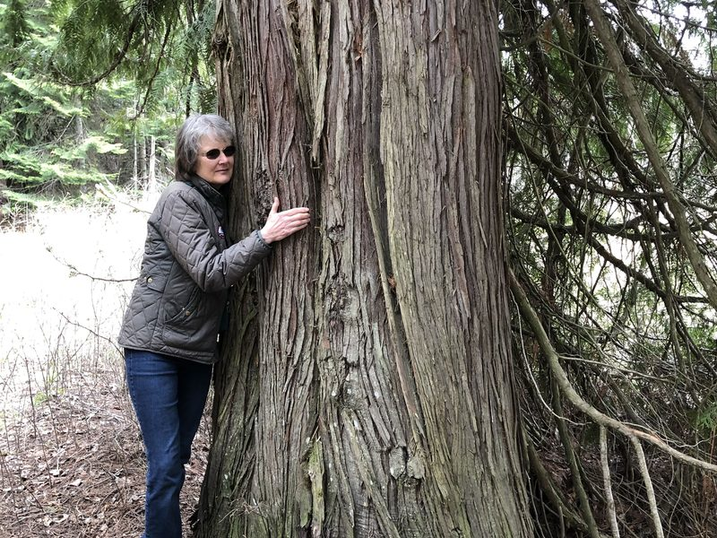
October 2025
People and Trees 1999
Jane Fritz
Back in the late 1990s, Jane Fritz produced this story — the last podcast of the series. After losing funding from federal humanities and public media doll…
Listen & read →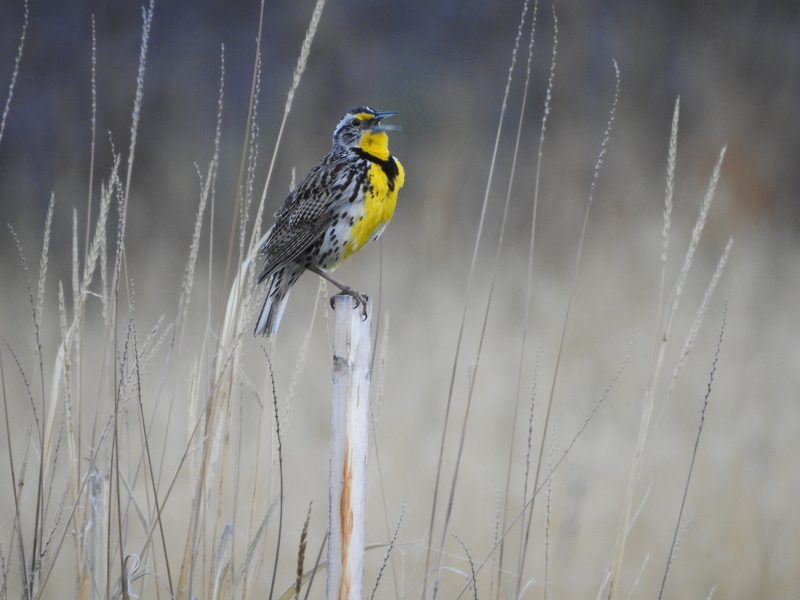
August 2025
Earth Song Reprisal
Shane Sater & Jane Fritz
I arrive long before sunrise in this dry part of western Montana. The mountains are black silhouettes around me. It’s late May, and these traditional lands…
Listen & read →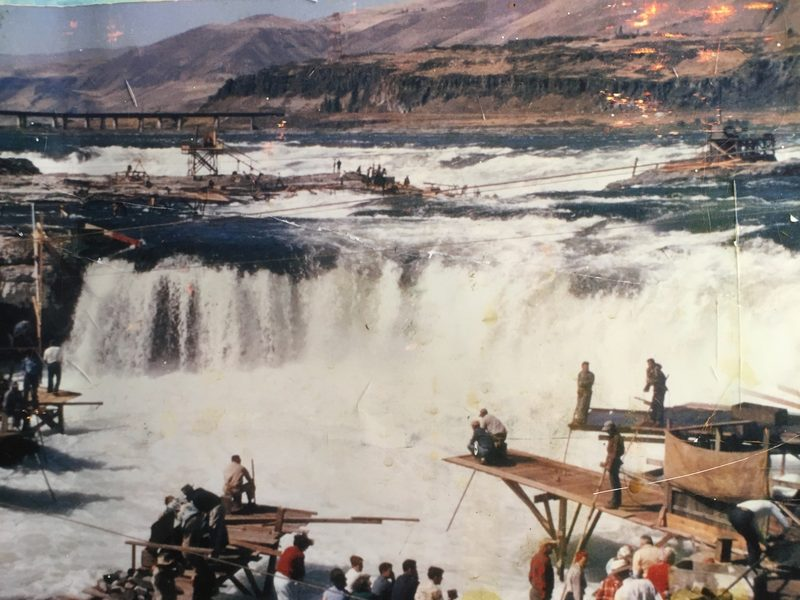
April 2025
People of the Salmon
Jane Fritz & Justin Lantrip
I love wild rivers and lakes. Fish captivate me. A one-hour documentary on the history of salmon in the Pacific Northwest — the threatened runs, their rela…
Listen & read →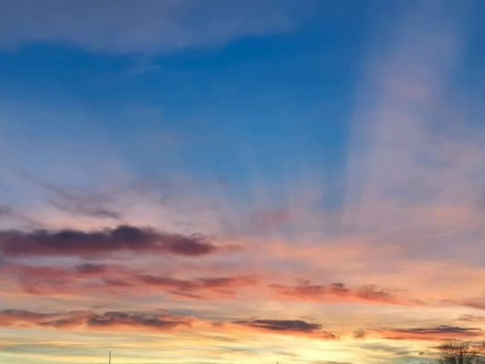
March 2024
Shoshone-Paiute Keepers of the Earth
Jane Fritz
As you drive south from Mountain Home or north from Elko, miles of seemingly endless fence lines mark cattle ranches and frame the highway. But fences sudd…
Listen & read →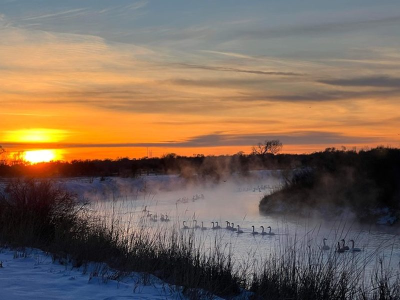
March 2024
Shoshone-Bannock Keepers of the Earth
Jane Fritz
In the very heart of Idaho wilderness, beneath the Sawtooths, springs forth a river like no other — the Salmon. It carves through rocky canyons for hundred…
Listen & read →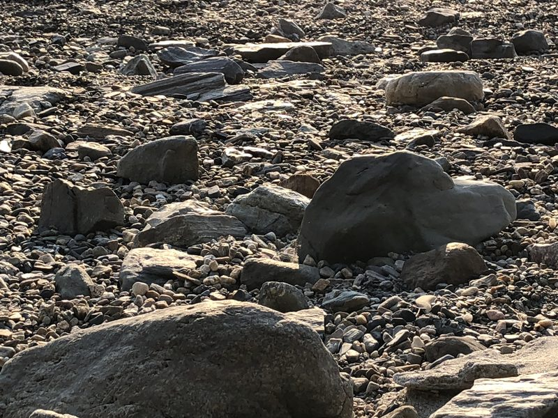
January 2024
Asking the Stones to Speak
Jane Fritz & Basil White
Often the word myth is used in conjunction with these stories. If we interpret them not literally but metaphorically, if we look at their symbolism, we can…
Listen & read →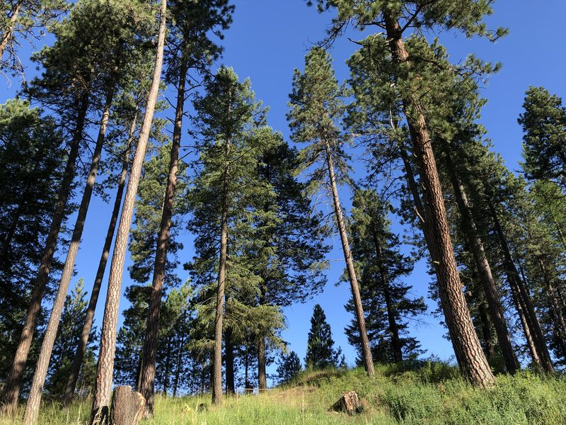
November 2023
Coeur d’Alene Keepers of the Earth
Jane Fritz
Their villages were once along the shores of pristine lakes — Coeur d’Alene, Benewah, Chacolet — and wild rivers — the St. Joe, St. Maries, Spokane. They f…
Listen & read →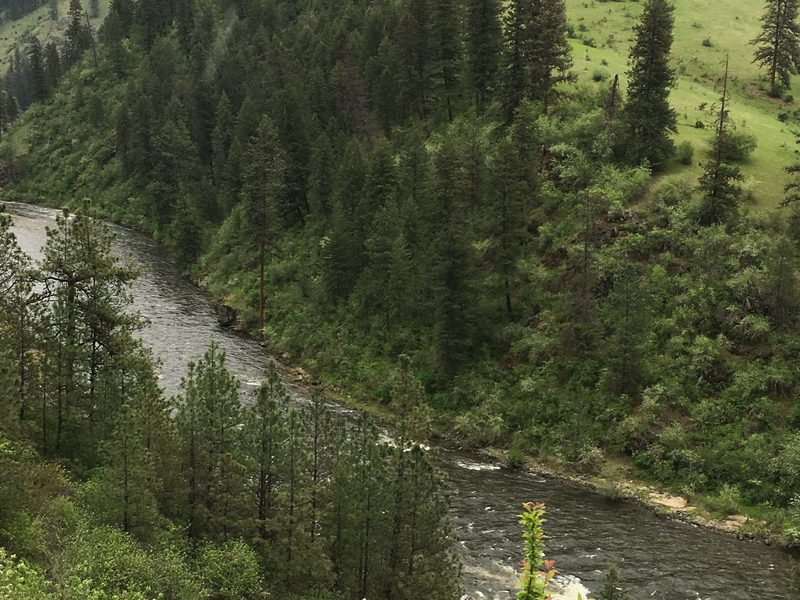
October 2023
Nez Perce Keepers of the Earth
Jane Fritz
Coyote, ’iceyeeye, he was going upstream. Coyote is always going upstream. He noticed the salmon were having some difficulty there. ‘I’ll build a fish ladd…
Listen & read →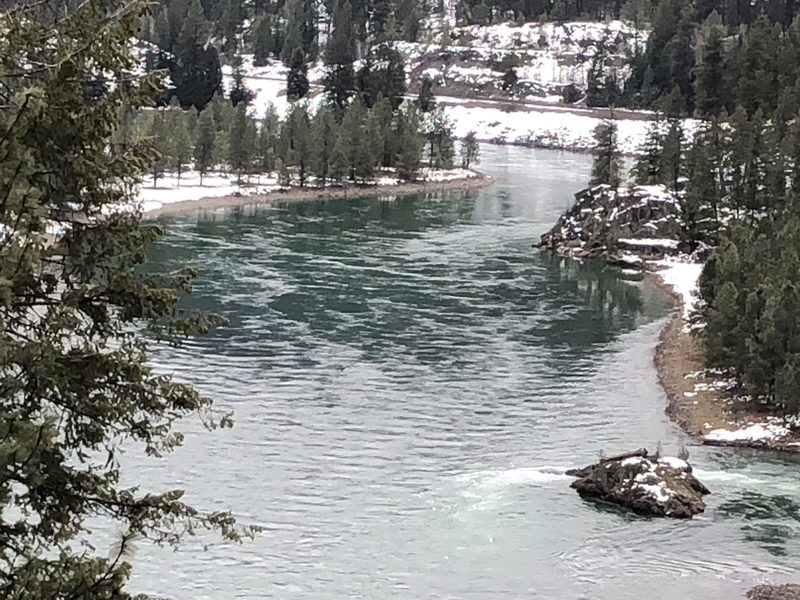
August 2023
Kootenai Keepers of the Earth
Jane Fritz
In the far northern mountains of Idaho’s Panhandle are found vestiges of grizzly bear, woodland caribou and gray wolf — species whose existence has been th…
Listen & read →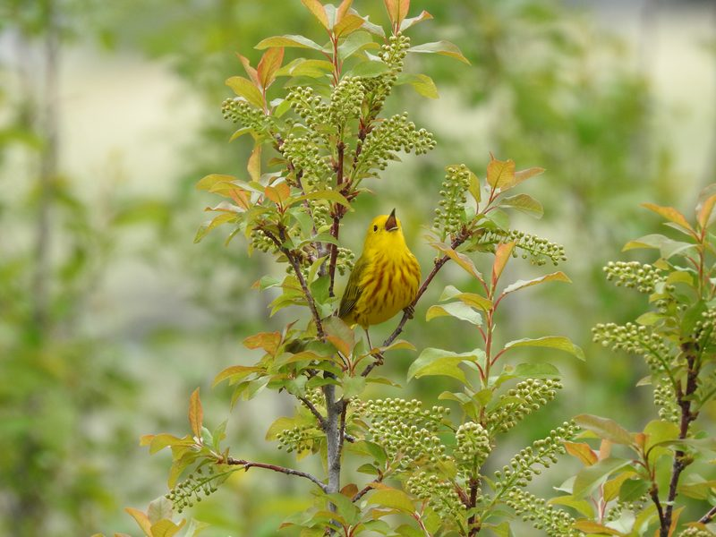
June 2023
Earth Song
Shane Sater & Jane Fritz
“I arrive long before sunrise in this dry part of western Montana. The mountains are black silhouettes around me.” Naturalist Shane Sater listens to the so…
Listen & read →
January 2023
Going Upstream
Jane Fritz
Coyote, he was going upstream. Coyote is always going upstream. He noticed the salmon were having some difficulty there. ‘I’ll build a fish ladder so that…
Listen & read →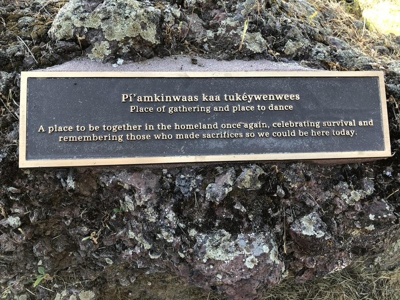
October 2022
Nez Perce Return to the Wallowa
Rich Wandschneider & Jane Fritz
The longer I live in this stunning Wallowa–Snake River country, the more complicated the past becomes. The present too. Like the country at large, we are e…
Listen & read →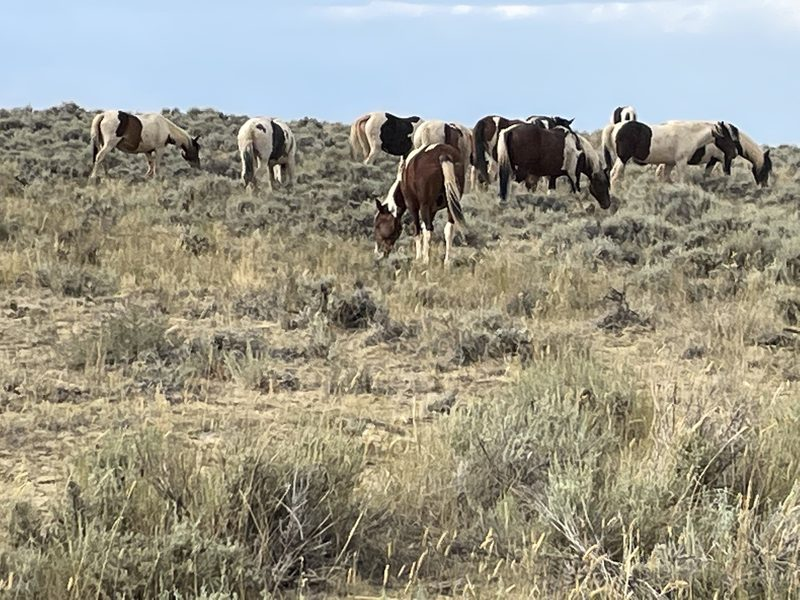
September 2022
Nimi’ipuu History in the Wallowa
Jane Fritz & Rich Wandschneider
I first encountered the Nez Perce, or Nimi’ipuu, in 1989 when I walked through the doors of the triangular building of the Nez Perce National Historical Pa…
Listen & read →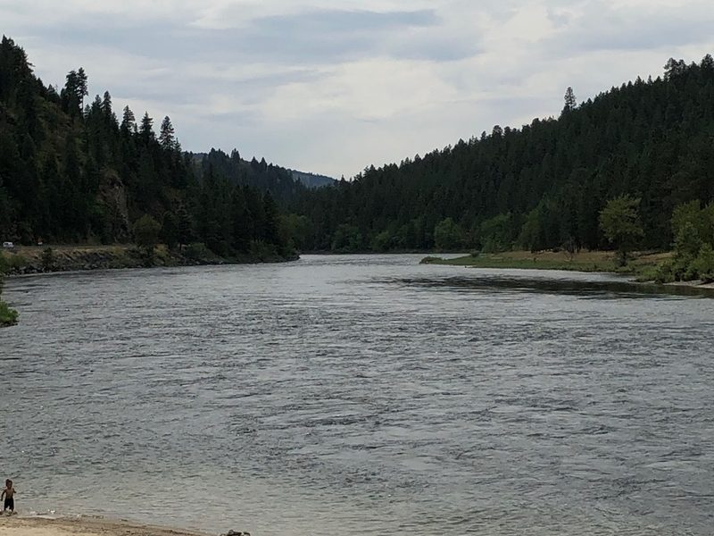
June 2022
Nez Perce Storytelling
Jane Fritz & Jeanette Weaskus
Hello, my name is Jeanette Weaskus and I’m an enrolled member of the Nez Perce Tribe of Idaho, or Nimiipuu. Today I’ll be talking about Nez Perce legends a…
Listen & read →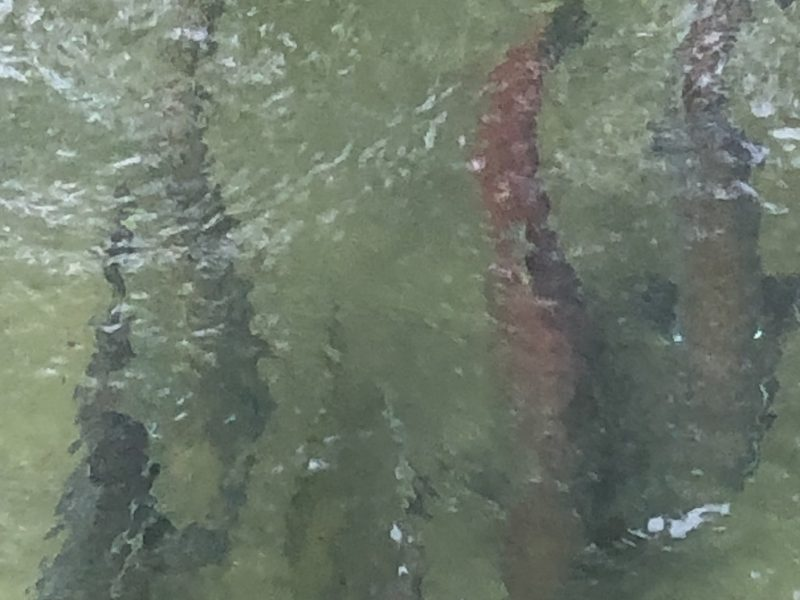
June 2022
Coyote Breaks the Fish Dam
Jane Fritz & Jeanette Weaskus
Hello, my name is Jeanette Weaskus and I am an enrolled member of the Nez Perce Tribe, or Nimi’ipuu. I used to work for the tribal radio station KIYE; my s…
Listen & read →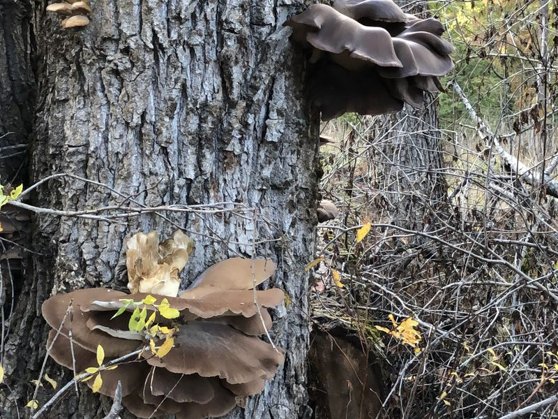
December 2021
People and Trees, Part 2
Jane Fritz
I always notice trees. I have taken so many pictures of trees that really speak to me — a tree in Lisbon whose branches covered a whole plaza; a very old t…
Listen & read →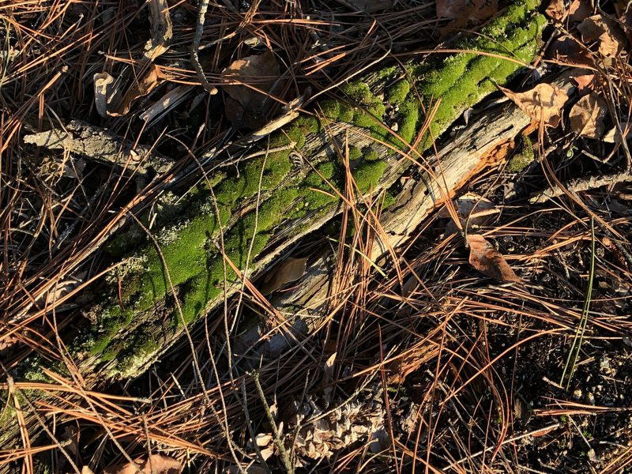
December 2021
People and Trees, Part 1
Jane Fritz
When a woman was going to make a basket from a cedar tree, she would stand before it and pray: ‘You are a mighty tree. You have been shelter to us in winte…
Listen & read →